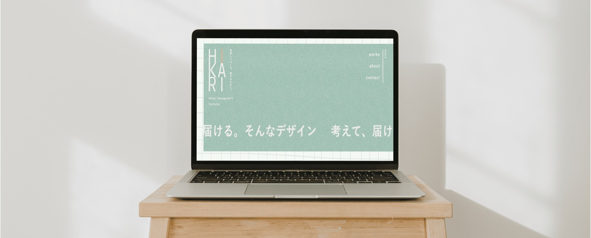
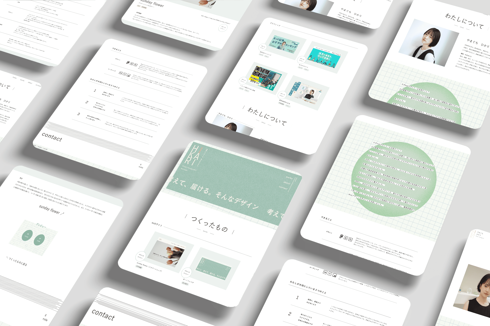
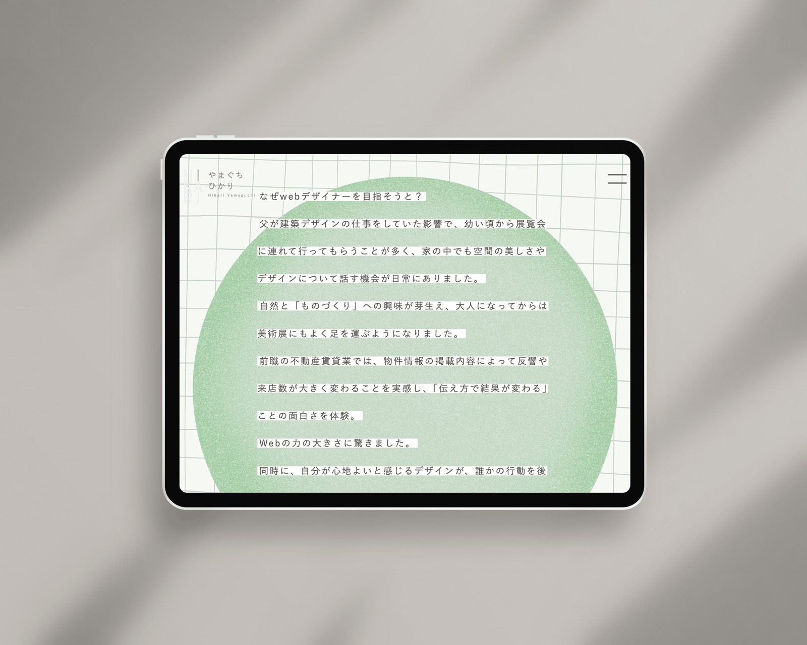
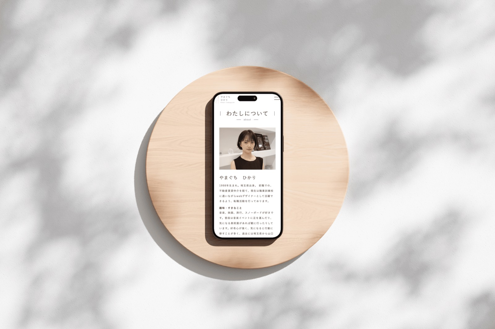
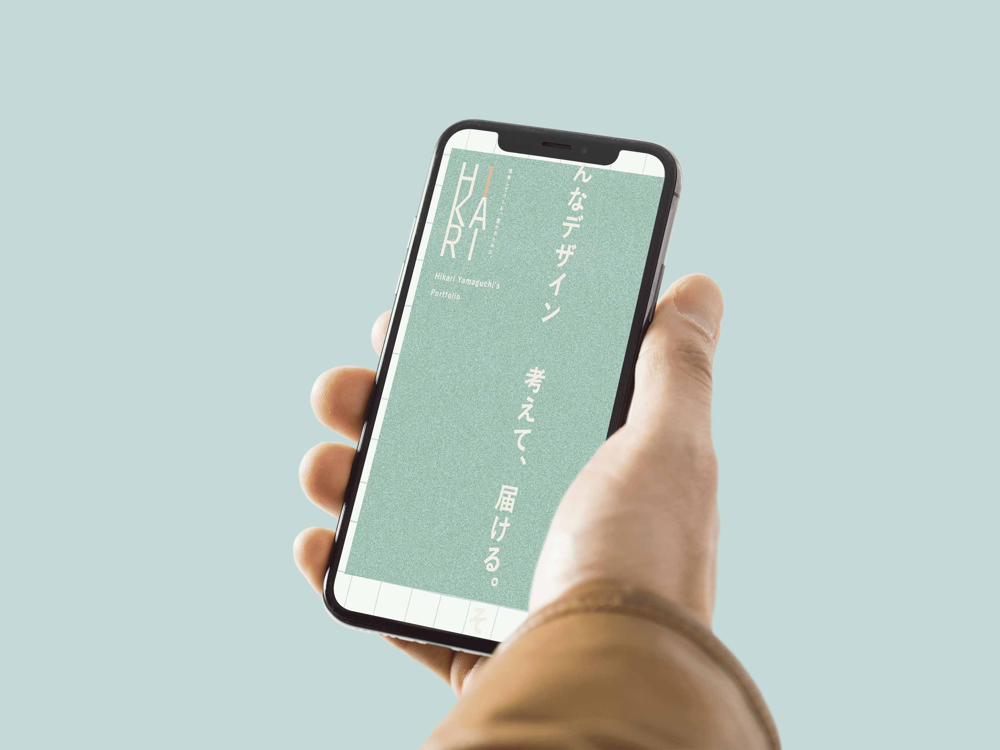

ポートフォリオ
くぼひかりのポートフォリオサイト
制作概要
Webデザイナーとしての自己紹介・実績紹介を目的としたポートフォリオサイト。就職活動を見据え、信頼感と個性のバランスを意識したビジュアル設計を行った。

- 課題
-
- ・自分らしさを表現しながらも、見る人にとって読みやすく、情報が整理された構成を心がけた
- ・採用担当者がPCで閲覧することを想定し、PCファーストでレイアウトを設計
- ・自己表現にとどまらず、作品紹介・プロフィール・問い合わせの導線を明快にすることを重視した
- ターゲット
-
Web業界への就職を目指すにあたり、主に企業の採用担当者を想定。
限られた時間の中でも、応募者の人物像・スキル・世界観を短時間で把握できることを意識した設計に。 - 目的
-
- ・自分の「考える力」と「デザイン力」を伝える
- ・作品と自分自身を一体的に紹介し、「この人に会ってみたい」と思わせるポートフォリオにする
- ・就職活動時に提出するポートフォリオとしての信頼性と使いやすさを重視
- デザイン
-
- ブランドカラーにくすみグリーンと白を基調とし、誠実さ・落ち着き・自分らしさを表現
- メインビジュアルでは、縦書き＋グリッド背景を活かし、静けさの中に芯を感じる雰囲気を演出
- 吹き出しによる補足情報の表示や、柔らかく自然なフォント選びで、“考えながら作っている”ことが自然と伝わるように工夫
- 情報設計
-
- トップページ1枚だけで「人物像＋実績＋センス」がざっくり伝わる構成に
- 詳細はページ遷移で確認できるようにしつつも、忙しい人でも離脱せずに全体像を掴めるよう吹き出しや視覚的要素で補足
- PCファーストを意識し、主要なメニューや作品一覧はファーストビュー内にまとめて配置
- 制作期間・ツール
-
- 制作期間：26日間（設計〜デザイン納品まで）
- サイトマップとコンセプト設計：3日（誰に何を伝えるか、どんな構成にするかを整理）
- ワイヤーフレーム：3日
- デザイン制作：10日間
- コーディング：10日間
- 使用ツール：Figma / Illustrator / Photoshop / html / css / javascript（jQuery）


学び
- ・自分を表現するポートフォリオでは、単に“おしゃれにする”のではなく、「誰に何を伝えたいか」から設計を始める重要性を実感した
- ・サイト構成やデザインの一つひとつに意図を持つことで、見る人に安心感や信頼を与える設計の大切さを学んだ
- ・特に「時間がない人にも伝わる構成」を意識したことで、 情報設計の視点（見せ方・順序・視線の流れ）を身につけることができた
- ・初めて「自分自身」をコンテンツとして扱ったことで、ブランディングや世界観の統一感を考える力が深まった
- ・今後はより多様なデバイスでの表示や、ユーザーからのフィードバックを反映する視点も取り入れていきたい

プレビュー